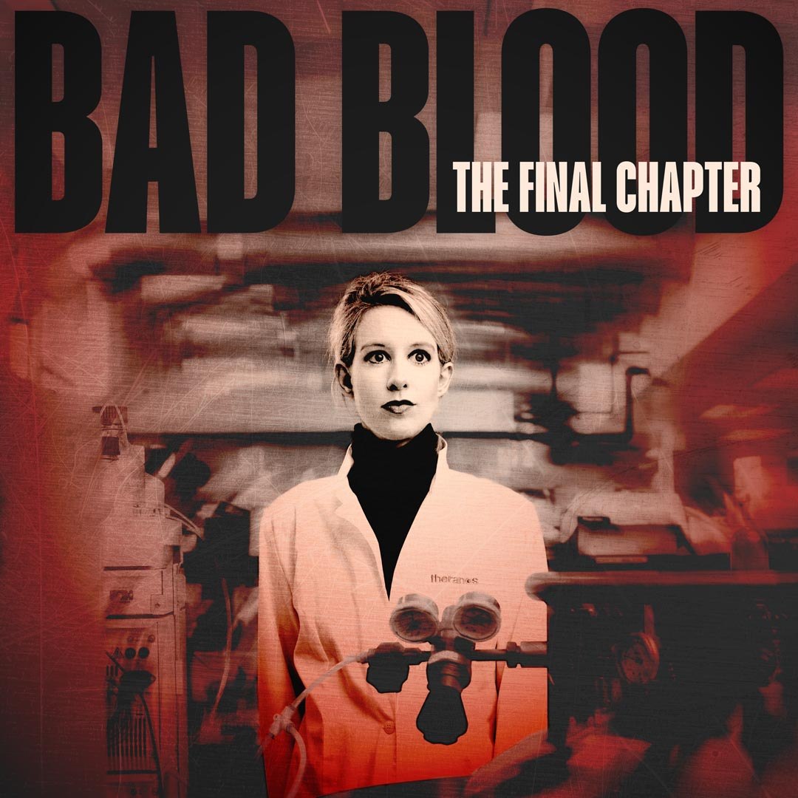
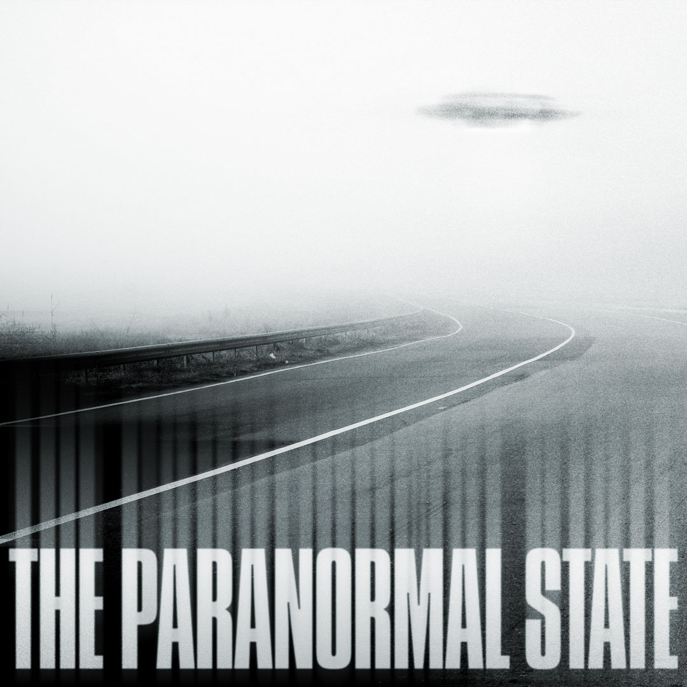
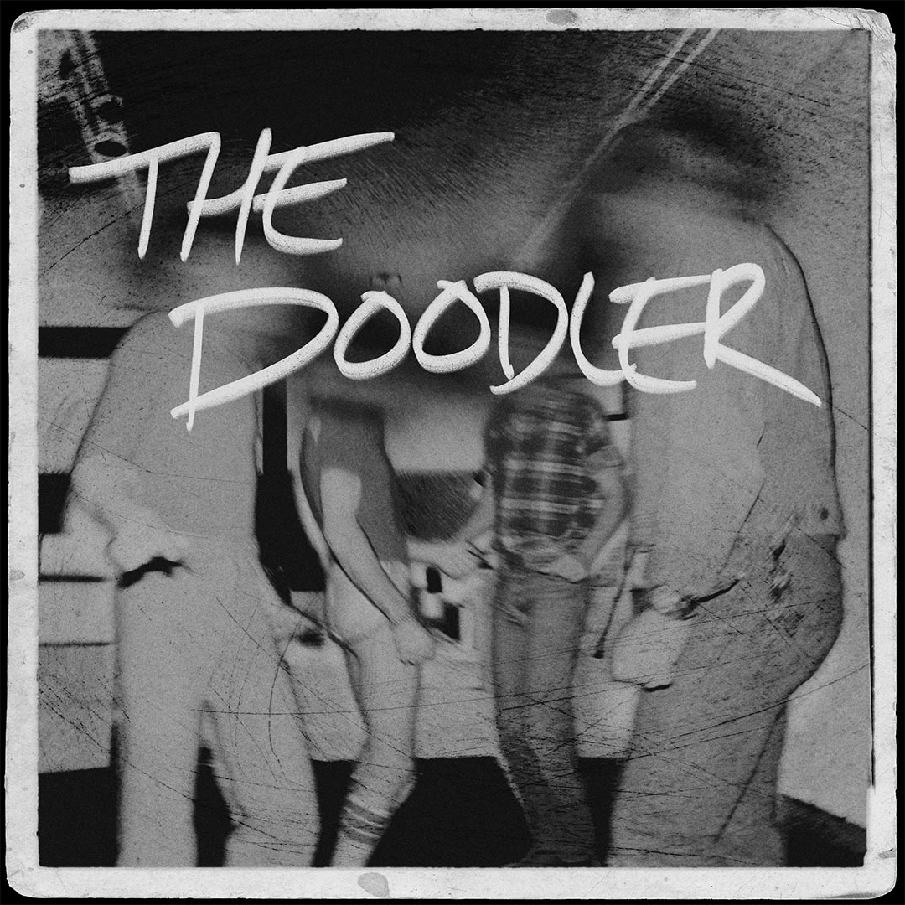

Tile Art Design — This tile art design is pretty cryptic if you're unfamiliar with the story. An arsonist was apprehended for starting several fires in LA (one of which was fatal) after a film script began circulating in Hollywood with eerily similar details to the string of fires he started.
Tile Art Gifs — This tile art was created by the production company, I then animated the artwork for social media promotion.
Tile Art Design
Tile Art Design — The image on the left was the season 1 artwork designed by the incredibly talented Jeff Schulz. I designed the Season 2 artwork using identical treatments.
Tile Art Gifs — Animations of my tile art design for social media promotion.
Unpublished Tile Art Concept — This podcast tells the story of a serial killer from the Bay Area in the 70s who targeted closeted gay men. He got his moniker because he lured men in by sketching their portraits in gay bars. He has never been caught since many of his targets that got away refused to participate in the investigation because they didn't want their sexuality to become public. For this specific comp, I did some research with Getty Images and found an image that was taken at a gay bar in the area he targeted that was taken around the time of the killings. I did some photo editing to distort their faces since a big factor in the story was going to be about the anonymity of his targets.
Unpublished Tile Art Concept — This was another comp I did that I really liked. The imagery from this comp was focused on where the victims bodies were found (on beaches around the bay area).
Tile Art Gifs — This tile art was created by the amazing Annie Stoll, I then animated the artwork for social media promotion.
Unpublished Tile Art Concept — The tile art on the left was created by the amazing Annie Stoll for Season 1. The tile art on the right was originally approved for Season 2, the story of a controversial tech businessman and spiritual guru. I had designed this concept and worked with Annie who helped illustrate the silhouette in the same style as her Season 1 art. They ultimately decided to divest from the illustration style of the first season as they wanted to attract more of a true crime audience.
Video Teaser — I animated the tile art for Seasons 1 and 2 with minimal typography for social media promotion.
Unpublished Tile Art Concept
Unpublished Tile Art Concept

Unpublished Tile Art Concept
Tile Art Gifs — This tile art was created by the production company, I then animated the artwork for social media promotion.

Unpublished Tile Art Concept — This show was a summer spin-off of a successful children's podcast. The image on the left is the original tile art. They requested we follow their brand guidelines with specific fonts and their color palette. I went for the camp badge direction. I liked how simple and clean it was and how it complimented the production company's other show art.

Unpublished Tile Art Concept — This show was a summer spin-off of a successful children's podcast. The image on the left is the original tile art. They requested we follow their brand guidelines with specific fonts and their color palette. I went for the camp badge direction. I liked how simple and clean it was and how it complimented the production company's other show art.
Unpublished Tile Art Concept — This was a comp they turned down for Firebug. Another one of the twists in the story is that the arsonist was the lead arson investigator. I liked this comp because the reflection of the fire in the badge subtly communicates that part of the story.
Unpublished Tile Art Concept — This comp was more broad, it didn't focus on the investigator or the manuscript, but just emphasized that the story took place in LA.